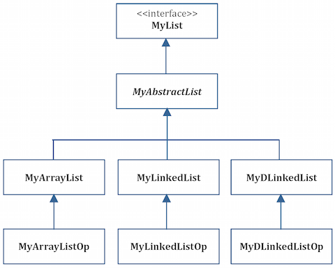

What to Turn In
Create a single zip file containing the complete directory created by NetBeans and submit your zip file through Blackboard.

For this and the next two assignments you will create a class hierarchy that has the MyList interface as its base. A simplified class hierarchy diagram is shown below. A brief description of the interface and classes is provided below. Here is a list of the methods for the interface and classes. You should read the JavaDoc pages for this hierarchy for a complete description of the interface, the classes, and the methods.
The class hierarchy will be completed in three parts, each of which will be submitted and graded separately as HW 05, HW 06 and HW 07. The three parts are cumulative. In other words, Part II should include everything from Part I, and Part III should include everything from Part I and Part II. Each part will be described below.

In order to assist you in determining whether or not your class hierarchy is working properly, I am providing you with a Tester.java program. You should download this program and copy it into your NetBeans project. The tester thoroughly tests the entire class hierarchy. When working on Part I of this assignment you will have to comment out the parts of the tester for singly and doubly linked lists. When working on Part II you can uncomment the singly linked list tests. When working on Part III you can uncomment the tests for the doubly linked lists.
When grading your homework I plan to use the same Tester.java program I provided to you.
MyList InterfaceThis is the interface that you are to download and include in your project. It contains descriptions of how each method should work.
MyAbstractListThis class implements the MyList interface. It includes methods that are common to all lists. The methods that must be included are described in the JavaDoc for MyAbstractList.
MyArrayListThis class extends MyAbstractList. It provides an array-base list implementation that includes only those methods not implemented in MyAbstractList. The methods that must be included are described in the JavaDoc for MyArrayList.
MyArrayListOpThis class extends MyArrayList and overrides certain methods that are implemented in MyAbstractList for optimization. The specific methods that must be overridden are shown in the JavaDoc for MyArrayListOp.
Create a single zip file containing the complete directory created by NetBeans and submit your zip file through Blackboard.